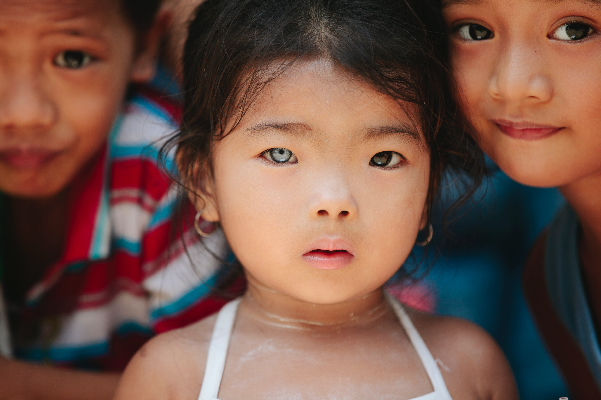
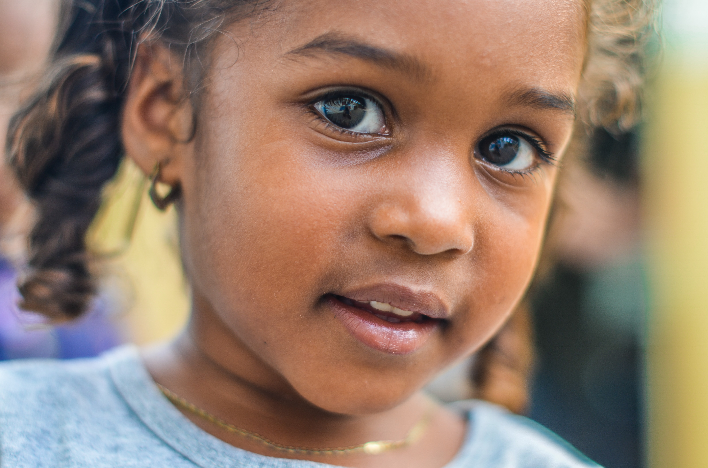
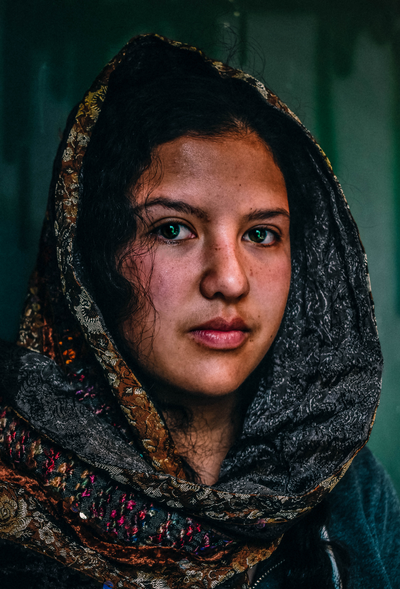
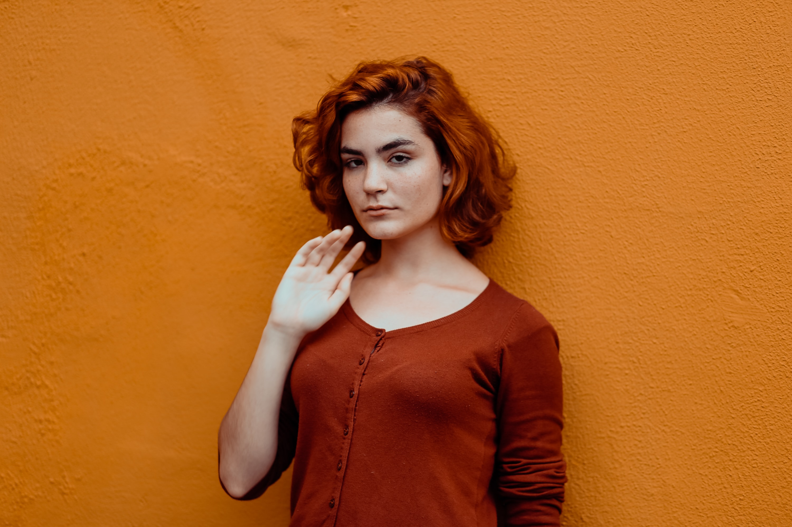

-PORTRAIT PHOTOGRAPHY-
One of the most popular genres of photography is portrait photography.
Portrait photography is capturing the photograph of a person or a group of people.Portrait photographers capture the personality, character and emotion of people around them.
They can be considered as an artistic represetation of a someone's character.
Portrait photography is capturing the photograph of a person or a group of people.Portrait photographers capture the personality, character and emotion of people around them.
They can be considered as an artistic represetation of a someone's character.



Portraits should be captured in a method of telling a story about a particular
subject and create a connection between the viewer and the subject.
Portrait photographs are more important because especially the eyes are always give more attention in a portrait as they speak the mood and portray the emotions of the person.
Portrait photographs are more important because especially the eyes are always give more attention in a portrait as they speak the mood and portray the emotions of the person.

"A photograph is a secret about a secret.
The more it tells you the less you know."
-Diane Arbus-
➤Back to Top
The more it tells you the less you know."
-Diane Arbus-